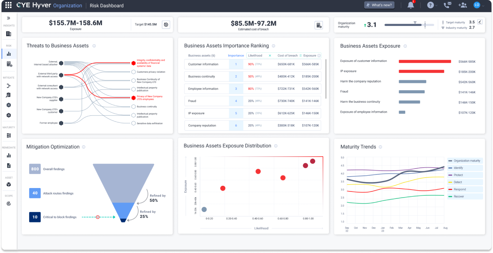
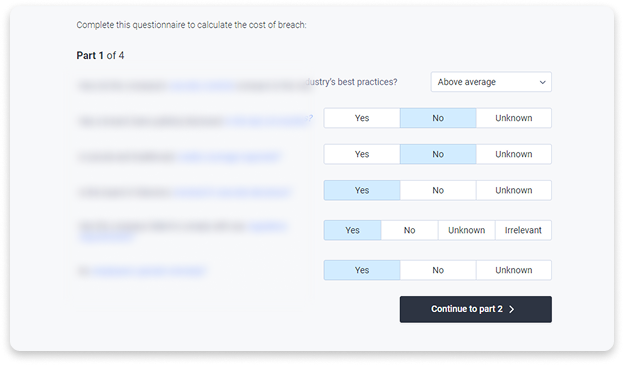
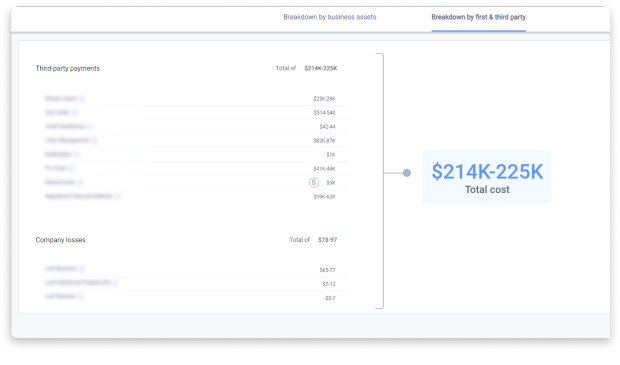
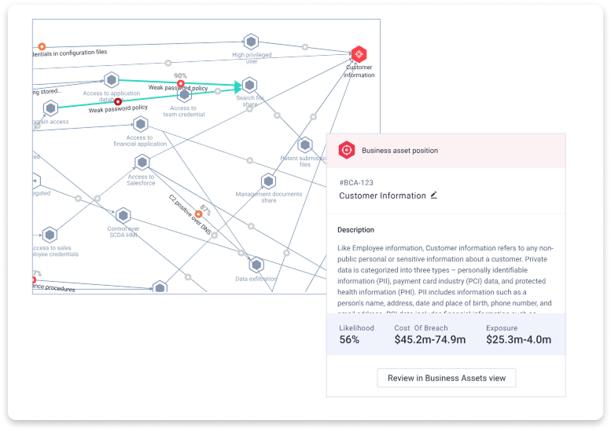

Cyber Risk Quantification
Goals
- Evaluate the organization's risks
- Assess cost and likelihood of breach to each business-critical asset
- Understand the financial meaning of these possible breaches
- Communicate risk to board and stakeholders
- Prioritize mitigation efforts to save time, money, and reduce risk
Personas
- CISO
- C-Level management
- Organizational decision-makers

This dashboard gives the CISO an overview of the organization's risk status. It is also used to communicate that status to stakeholders and to secure budgets for risk mitigation.
Challenge: Don't make the user panic!
To improve the accuracy of our calculations, we ask users many questions. This can feel overwhelming and may cause users to abandon the process before they even start.
The Solution
Breaking the questions into smaller, manageable chunks proved most effective. Users can focus on a subset at a time, making the process clearer and less daunting. Once the initial form is completed, the view switches to a summary list that is easy to edit and search.

Challenge: Simplify a very complex algorithm
Users input large amounts of data, and we automatically collect even more. The sheer volume can be overwhelming, making it hard to grasp the key takeaways. Our goal was to present the bottom line as simply as possible.
The Solution
We created an aggregated list of categories and summed the costs for each one. Using a straightforward "vertical calculation" to reach the bottom line is a method everyone has practiced since grade school, so why not use it here?

Challenge: Embed quantification across the entire system
We needed to weave quantification throughout the system so users naturally consider financial impact in every decision they make.
The Solution
We analyzed user workflows and behavior patterns, then strategically placed quantification values at critical decision points across the system.
